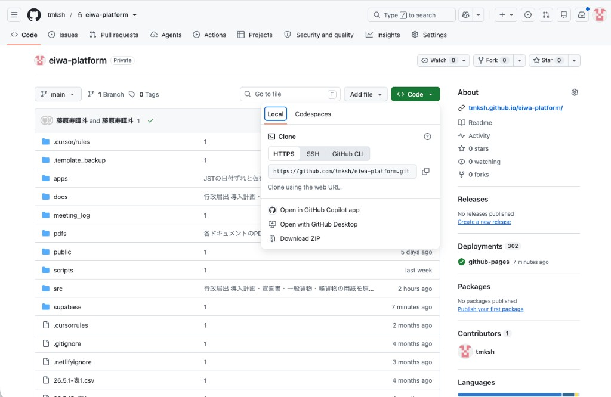
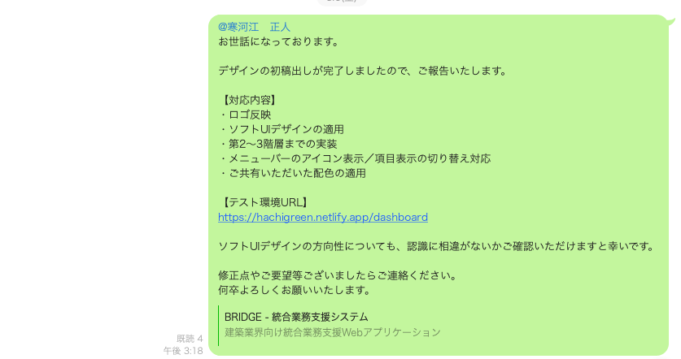
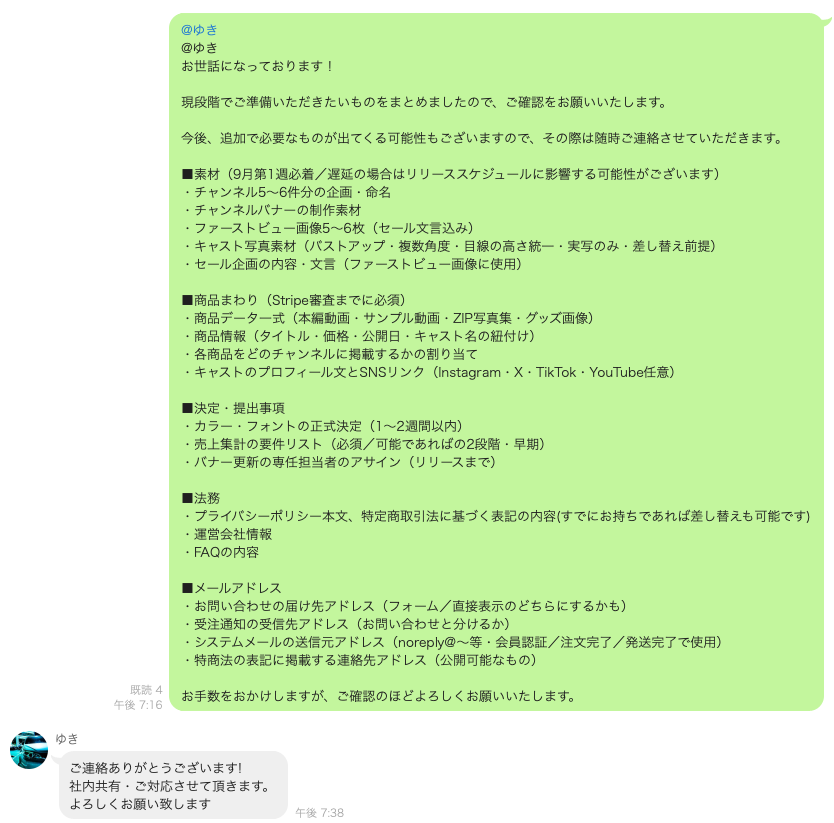
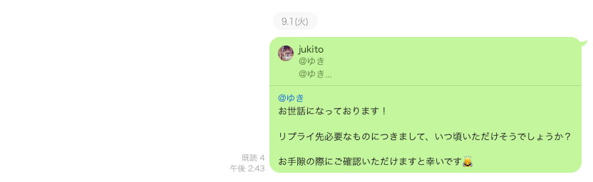
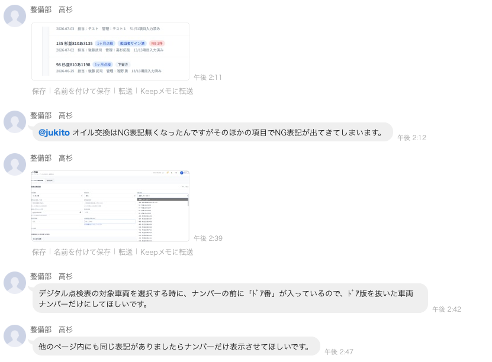
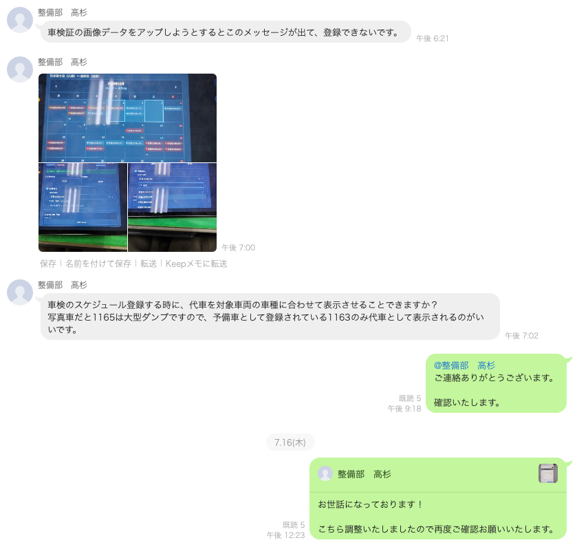
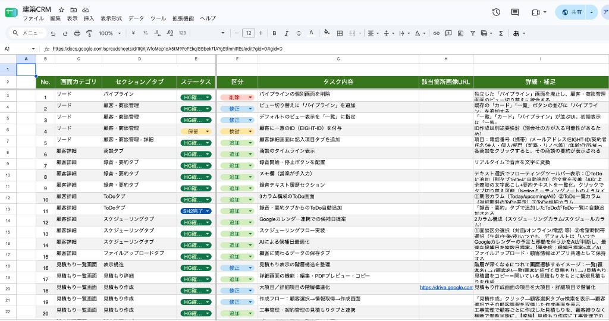
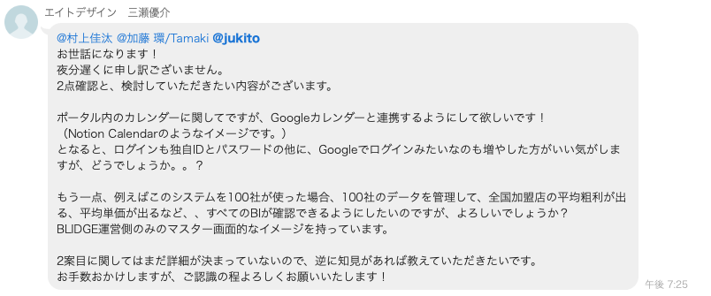
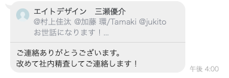
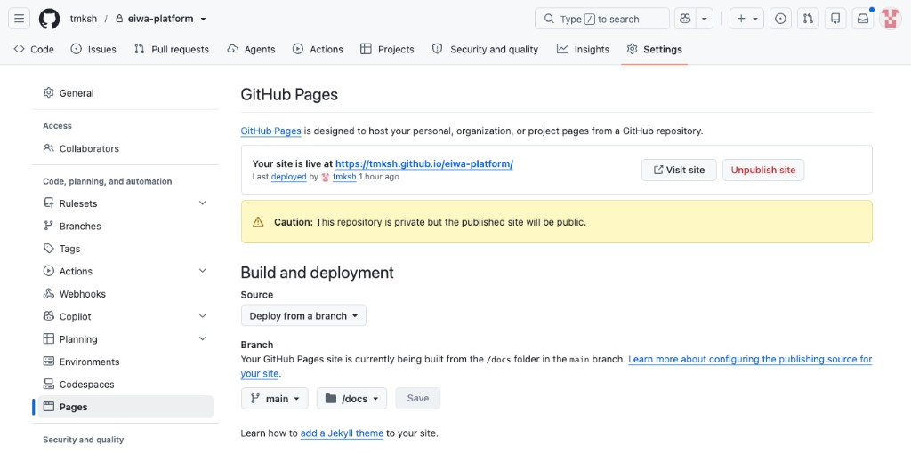

開発・検証
営業のリポジトリを引き継ぎ、初稿 → 修正 → 検収で確定させる。途中の追加要望は、その場で受けない。
今の場面を押す
 GitHub Desktop
GitHub Desktop GitHub
GitHub Supabase
Supabase Netlify
Netlify始め方
営業が作った GitHub を使う。空のリポジトリは作らない。中に、営業段階の要件定義・機能一覧・ヒアリングのフォルダがある。
- 緑の Code → Open with GitHub Desktop でクローンする。操作は GitHub。
- 終わったら Open in Cursor。操作は GitHub Desktop。
- Cursorのチャットで、中の要件定義・機能一覧・ヒアリングを読ませて聞く。分からない範囲は想像で埋めず、営業へ返す。
- 内容が合っていたら、下の2行をCursorのチャットに送る。

 最初に、Cursorのチャットへ
最初に、Cursorのチャットへ
このリポジトリの要件定義・機能一覧・ヒアリングを読んで、何を作るか要約して。
OKなら、続けてチャットへ
モダンなUI/UXデザインで実装してください。
Next.jsで作成してください。
Pinterestなどで参考デザインを探して、画像を一緒に添付するとなお良い。
お客様にとって開発は投資です。2〜3か月遅れると、回収の開始も遅れます。
初稿の出し方
デザインが全部決まるのを待たない。中身から先に作り、初稿 → 修正 → 検収で確定させる。
モックアップ
見た目だけ。先に「保存はできません」と言う。
社内の呼び方：ワイヤーフレーム＝灰色の骨格。プロトタイプ＝画面遷移がある。モックアップ＝見た目に近い試作（基本はこちら）。
先方への連絡
出し終わったら送る。入れるのは対応内容、テスト環境のURL、確認してほしい点。見た目だけなら「保存はできません」も書く。

お世話になっております。
デザインの初稿出しが完了しましたので、ご報告いたします。
【対応内容】
・今回入れたもの
【テスト環境URL】
（NetlifyのURL）
デザインの方向性について、ご確認ください。
修正やご要望がございましたら、お知らせください。
送ったら、修正シートを用意する。続けて、先方からもらうものを聞く。
先方からもらうもの
初稿を出したあとで聞く。先方が出さないと進められない箇所を、まとめて一度に伝える。これがないとリリースできない。
今の段階で必要なものをまとめました。遅れると、リリースに影響します。

必要なものにつきまして、いつ頃いただけそうでしょうか？

定例と修正の回し方
定例を組む
初稿を出したあと、まず打ち合わせを入れる。定例の間隔は、その場で決める。決まってから、見せる → 決める → 次までの宿題、で回す。終わったら、文字起こしを議事録にして Google ドライブへ置く。置かないと、あとから「言った／言わない」になる。
LINEが来たとき
「直して」「エラーが出る」は、LINEで来ることが多い。先に一時返信してから着手する。当日中に返す。
ご連絡ありがとうございます。確認いたします。
調整しましたので、ご確認ください。


シートに残す
LINEのままにしない。来た内容を、こちらでスプレッドシートに移す。先方に行を書いてもらい、直してステータスを変え、もう一度確認してもらう。漏れを防ぐ。口頭だけにしない。

| 列 | 何を書くか |
|---|---|
| 画面カテゴリ | どの画面か |
| セクション／タブ | どのタブか |
| ステータス | 上の4つ。飛ばさない |
| 区分 | 修正 / 追加 / 削除 / 検討 |
| タスク内容 | 何をどうするか。短く |
| 該当箇所画像URL | スクショがあれば付ける |
| 詳細・補足 | 先方の指摘。消さない |
区分が「追加」なら、シートに残したうえで、すぐ作らない。今回の範囲か、見積かを先に見る。
見た目を確定
デザイン、レイアウト、リンク、色、フォント、動きの有無
シートの行を潰す
不具合、崩れ、文言、画像
お客様が確認
2週間〜1か月。社内で見たところを出してから
追加要望が来たとき
開発が始まってから、追加機能や要望が来ることは多い。その場で「やります」「タダでできます」と言わない。一旦社内に持ち帰ってから連絡する。Cursor ですぐ作れることと、契約の範囲は別です。
今回の範囲
- 誤字、色、並び
- 表示崩れ
- 動かない不具合
追加の費用
- 新しい画面、権限、保存
- 帳票、外部連携
- 約束に無い業務
改めて社内精査してご連絡します。
持ち帰ったあと、やる / 次に送る / 別途見積 で戻す。「前回言ったはず」には、要件定義の版を指す。「A・B・Cまで」なら D は入っていない。入れるなら見積と、いつやるかも決める。


締め切り
- リリースの1か月半前まで（小さい案件は2週間前）。以降は次へ送る。
- 返事の前に、範囲・日数・費用を出す。
- 今回やる / 次に送る / やらない、を決めた日を残す。
キックオフで先に伝える。あとから言うと「間に合わないのは当社の都合」になる。

基盤の話が出たとき
「AWSで」「Firebaseで」と言われても、すぐ「やります」と言わない。希望は聞く。そのうえで、速さ・運用しやすさ・費用を比べて提案する。
うちの仕事は、一覧・帳票・会員が多い。データが表で見えて、ログインも同じ場所。毎回同じ型で、Cursorで作れる。指定がなければ、これが一番速い。
先方には「サイトで使うデータを、表で管理している場所です」と言う。読み方はスパベース。操作は Supabase。
Firebase
使うときチャット、通知、スマホアプリが本体。先方がGoogle指定のとき。
メリット通知が速い。チャット向き。Googleと連携しやすい。
向かない一覧や帳票、集計が要るとき。
AWSなど
使うとき大きい会社の指定、既存のサーバーに載せる、社内でAWS以外ダメ。
メリット先方のサーバーに合わせられる。審査を通しやすい。細かく組める。
注意日数と費用がかかる。その場で決めず、営業へ返す。
迷ったらその場で決めず、営業か案件オーナーへ。
検収
社内側で全部動くことを確認してから、完了を伝える。先方は2週間〜1か月で確認する。直しがあれば、その期間内に直して納品完了。
お世話になっております。
社内側の動作確認が完了しましたので、ご報告いたします。
【確認期間】
2週間〜1か月
【提出資料】
・仕様書
・機能一覧
・チェック項目（社内で確認した箇所）
修正点がございましたら、この期間内にご連絡ください。
期間内に対応し、納品完了といたします。
社内で見たところを、見えるかして出す
動作確認で何をしたかは、先方が見られる形にする。GitHub Pagesでチェック項目を作るか、スプレッドシートにする。仕様書や機能一覧も、Pagesで出してURLを送る。ファイルをメールで置かない。
作り方
Cursorに、今のシステムを仕様書にして、と頼む。画面のスクショを付けて出す。出てきたものを整えて提出する。チェック項目も同じ。Pagesの操作は GitHub。02でも同じ手順。
Cursorのチャット（仕様書）
今の画面を正として、仕様書を作って。画面のスクショを付けてあります。
Cursorのチャット（機能一覧）
今のシステムの機能一覧を、画面ごとにスクショ付きで作って。

リポジトリが private でも、公開したページは誰でも見られる。実名、ID、パスワード、社内金額は書かない。
- 完了定義を、お客様が操作して確認する。
- 合格 / 残件つき合格 / 不合格。仕事が止まるものだけ不合格。
- 約束に無い「もっとこうしたい」は見積に回し、判定に混ぜない。